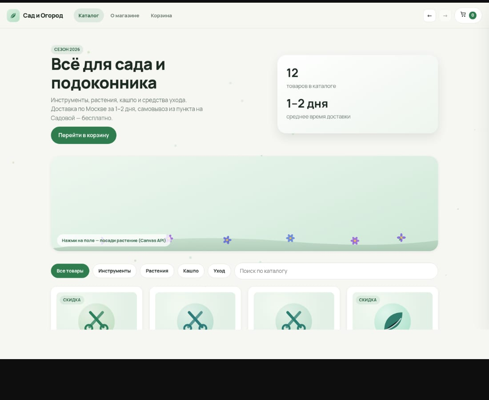
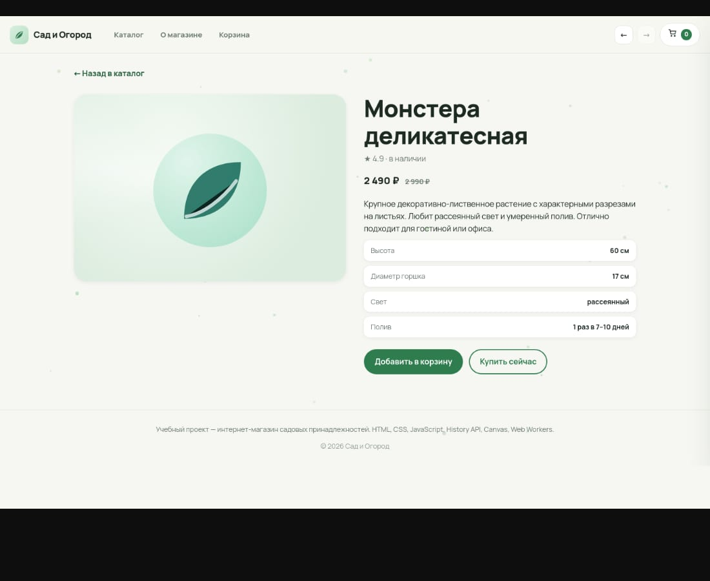
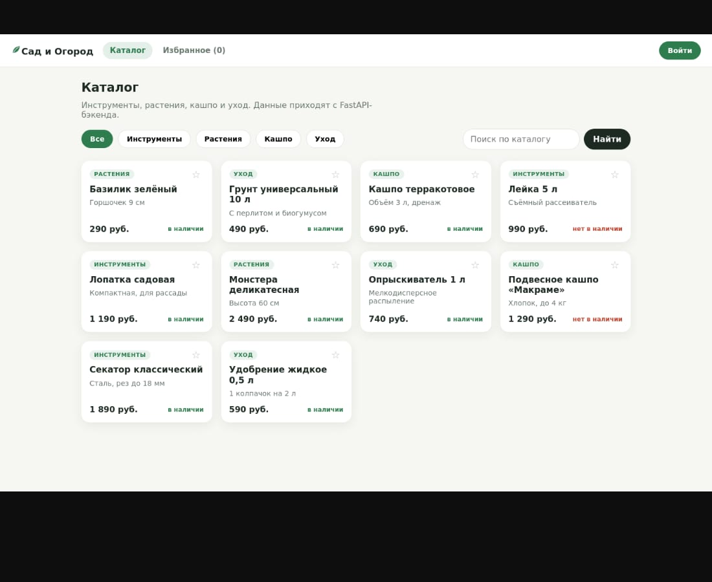
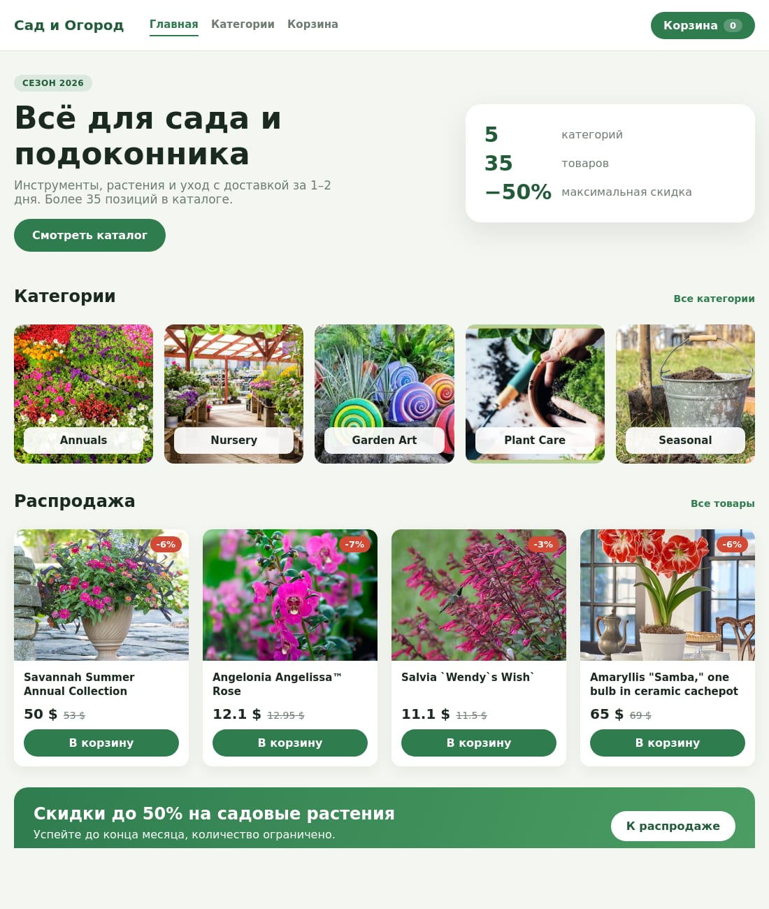

Итоговые работы за осенний семестр
Здесь собраны задания, которые нужно было сдать, и то, как я их решал. По каждому разделу есть ссылки на исходники и на живые версии, где они есть, и короткое описание того, как проверять.
В семестре одиннадцать дисциплин, итоговые работы были по восьми. Физкультура, техдокументация, HTML/CSS и HTML 5 API уже отправлены, остальные четыре выложены здесь и готовы к сдаче.
HTML/CSS
сданоЗадание. Итоговая работа по теме интерактивных элементов: страница с анимациями и трансформациями, ссылка на код и на результат, опубликованный на хостинге.
Как решал
Собрал интернет-магазин садовых товаров на чистом HTML, CSS и JavaScript, без сборщиков. Каталог на Grid, карточки наклоняются при наведении через perspective и rotate, иконка выезжает вперёд через translateZ. На странице товара иконка плавает на keyframes, поверх неё вращается блик из конического градиента. Корзина выезжает справа через transform и затемняет фон. Счётчик в шапке подпрыгивает при добавлении.
Ещё сделал переменные для цвета и отступов, три брейкпоинта, видимые рамки фокуса и поддержку prefers-reduced-motion. Стили разбиты по компонентам, в общем файле только токены и типографика.
Как проверить
- навести курсор на карточку в каталоге, она должна наклониться;
- добавить товар, счётчик в шапке увеличится, корзина выедет справа;
- сузить окно меньше 720 пикселей, сетка станет одноколоночной.


HTML 5 API
сданоЗадание. Практическая работа: навигация через историю браузера с кнопками назад и вперёд, интерактивная графика на Canvas с анимацией через requestAnimationFrame, веб-воркер с фоновыми вычислениями, интерфейс для всего этого, обработка ошибок и сообщения об успехе.
Как решал
Тот же магазин, отдельная часть работы про браузерные API. Роутер на pushState и popstate, маршруты каталог, товар, корзина и о магазине. Кнопки в шапке вызывают history.back и history.forward, позиция скролла лежит в state и восстанавливается при возврате. Прямые ссылки на товар открываются и на Pages, для этого 404.html запоминает адрес и возвращает на index.
Графика устроена так. Клик по полю сажает растение, оно вырастает и покачивается, отрисовка идёт в requestAnimationFrame с учётом плотности пикселей. На фоне отдельный холст с частицами.
Воркер делает две вещи. Считает итоги корзины со скидками и количество простых чисел до N. Для второго на странице о магазине есть поле ввода. Миллион считается примерно восемь миллисекунд, интерфейс не подвисает.
Как проверить
- открыть товар и нажать назад, вернёт в каталог без перезагрузки;
- кликнуть по зелёному полю под заголовком, появится растение;
- в разделе о магазине ввести 1000000 и нажать кнопку, получится 78 498.
PHP
готово, к сдачеЗадание. Собрать в один репозиторий все выполненные задания дисциплины: консольный диалог, CAPTCHA на картинке и книжный интернет-магазин.
Как решал
Три папки. В первой глухая бабушка: отвечает «АСЬ?! ГОВОРИ ГРОМЧЕ, ВНУЧЕК!» на фразу без восклицательного знака и случайным годом на крик, уйти можно тремя «ПОКА!» подряд, причём одной строкой не считается.
Вторая это CAPTCHA. Пять символов рисуются на шумовом фоне через GD и imagettftext, размер 18-30, шаг 40, код лежит в сессии и одноразовый.
Третья книжный магазин на PDO и SQLite. Каталог с фильтром и поиском, корзина в сессии, заказ сохраняется в транзакции.
Как проверить
- php task1-grandma/grandma.php и ввести фразы из задания;
- php -S 127.0.0.1:8091 -t task2-captcha, открыть в браузере и ввести код;
- php -S 127.0.0.1:8092 -t task3-books, добавить книгу и оформить заказ.
Node.js
готово, к сдачеЗадание. Получить данные от веб-службы ЦБ РФ. Нужны два SOAP-клиента и один SOAP-сервер, схема такая: клиент, прокси, сервер ЦБ. Прокси принимает getValutes и getValute, ходит в ЦБ и отдаёт JSON.
Как решал
Прокси на встроенном http, SOAP собираю сам на fetch, без библиотек: конверт, заголовок SOAPAction, разбор ответа, обработка soap:Fault. getValutes превращается в GetCursOnDateXML на текущую дату, getValute в GetCursDynamicXML с кодом валюты и периодом. Курс привожу к цене за одну единицу, делю Vcurs на Vnom, иначе иена и тенге приходят за сто единиц и цифры несравнимы.
С сервера, где я работал, cbr.ru не открывался, поэтому для проверки написал мок-сервер ЦБ с теми же тремя операциями и сквозной тест. Переключение на настоящий ЦБ это одна переменная CBR_URL.
Как проверить
- node test/e2e.js, тест сам поднимает мок и прокси;
- node proxy/server.js и node clients/valutes-client.js, увидите таблицу валют;
- node clients/valute-client.js USD 2026-03-01 2026-03-05, увидите динамику.
SQL и тестирование
готово, к сдачеЗадание. Пять запросов к PostgreSQL по схеме клиентов, заказов и товаров: клиенты с заказами в текущем месяце, товары дороже средней по категории, заказы с электроникой, клиенты без заказов в прошлом году, товары без продаж. Плюс отчёт о проверке и рекомендации.
Как решал
Собрал тестовую базу из трёх категорий, десяти товаров, пяти клиентов и шести заказов, прогнал каждый запрос и сверил результат руками. В отчёте отметил, что без DISTINCT заказы дублируются по числу электронных позиций, что в первом запросе нужен GROUP BY по клиенту и что NULL в дате или цене ломает суммы.
По году отдельная история. EXTRACT возвращает число, и если сравнивать его с датой или интервалом, а не с числом, PostgreSQL ругается на типы. Надёжнее date_trunc, он возвращает timestamp.
Рекомендации простые: индексы на customer_id, order_date, order_id и product_id, ограничения NOT NULL и CHECK на положительные значения, статус и дата оплаты в заказах, уникальность почты и названия товара внутри категории.
Как проверить
- залить schema.sql в PostgreSQL и наполнить тестовыми данными;
- выполнить пять запросов из answer.txt, сверить с результатами в тексте.
React и TypeScript
готово, к сдачеЗадание. Финальный проект: Vite, React и TypeScript, не меньше четырёх маршрутов с динамическим параметром и страницей 404, защищённый маршрут, типизированный Axios к FastAPI, состояния загрузки и ошибки, Zustand, вход по JWT с интерцепторами, единая стилизация.
Как решал
Каталог садовых товаров. Маршрутов пять, карточка товара с параметром, избранное закрыто PrivateRoute с проверкой при прямом заходе и возвратом на исходную страницу после входа. Axios-клиент с baseURL и двумя интерцепторами, второй ловит 401 и разлогинивает.
Состояния запросов описал объединением loading, error и data, для этого есть хук useRequest. Zustand на избранное, оно сохраняется в localStorage. Стили на CSS Modules.
Бэкенд на FastAPI: вход с JWT на час, пароли через PBKDF2, каталог с фильтрами и создание товара только с токеном.
Как проверить
- npm run build в папке app, сборка проходит без ошибок типов;
- поднять api и открыть избранное без токена, перекинет на вход;
- войти student@example.com и password123, вернёт на избранное;
- открыть /items/4 и несуществующий адрес, будет карточка и 404.

Учебная практика Front
готово, к сдачеЗадание. По макету и техтребованию сделать интернет-магазин садовых принадлежностей на React: Redux Toolkit, react-router-dom, react-hook-form, архитектура с папками components, pages, store и assets, у каждого компонента своя папка и модульный CSS, данные брать с предоставленного бэкенда.
Как решал
Структуру сделал как просили: компоненты папками, внутри jsx, module.css и index.js, имена с постфиксами Page и Card, переиспользование на разных страницах. Три слайса в Redux Toolkit, загрузка через createAsyncThunk, шесть маршрутов, две формы на react-hook-form с валидацией. Корзина в Redux и в localStorage, после заказа очищается.
Стили сверял с макетом из Figma. Получились крупный первый экран, ряд категорий, распродажа, зелёный баннер, форма заявки, контакты с картой и подвал. Адаптив до 820 пикселей.
Как проверить
- поднять backend из telran-backend на 3333 и app на 5174;
- на главной должно быть пять категорий и тридцать пять товаров;
- открыть первую категорию, там восемь товаров;
- добавить товар в корзину и оформить заказ, корзина очистится.

Алгоритмы и структуры данных
готово, к сдачеЗадание. Четыре итоговые работы: программа на динамическое программирование, диспетчер заявок на дереве поиска и куче, маршруты кампуса на графах с алгоритмом Флойда-Уоршелла, реестр оборудования на хеш-таблицах.
Как решал
По динамике сделал все пять задач из задания: последовательности без двух единиц, число путей по полю, минимальный маршрут с диагональю, возрастающую подпоследовательность за n log n и палиндром вычёркиванием букв.
В диспетчере заявок дерево поиска по номеру заявки, вставка, поиск и удаление в трёх случаях, четыре обхода, высота, листья и проверка свойства дерева через диапазоны. Плюс максимальная куча массивом, построение за линейное время, просеивание, сортировка кучей и отчёт в двух порядках.
В маршрутах кампуса восемь объектов и двенадцать маршрутов, список смежности и матрица весов, обходы в ширину и глубину, Дейкстра с восстановлением пути, Флойд-Уоршелл для всех пар, диаметр, радиус и центр. Центр вышел столовая, если бы делали пункт помощи, ставить туда.
В реестре оборудования четыре варианта хеш-таблицы: цепочки, линейное и квадратичное пробирование, двойное хеширование. Сравнил на одних данных, коллизий везде семь, а проб больше всего у линейного пробирования и меньше всего у двойного.
Как проверить
- python3 dp_tasks.py, ответы по пяти задачам;
- python3 tickets_tree.py, обходы, куча и сортировка;
- python3 campus_graph.py, матрицы и маршруты;
- python3 hash_registry.py, состояние таблиц и сводка сравнения.
Что стоит знать
В Node.js проверка шла на локальном мок-сервере ЦБ, потому что с моего сервера cbr.ru не открывается. В практике Front бэкенд брался готовый, его код не менял. CAPTCHA проверял только локально, публичную ссылку не выкладывал.